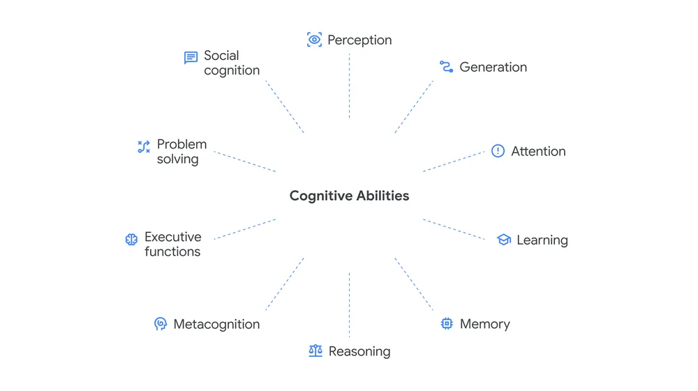

Measuring Progress Toward AGI: The Cognitive Science Behind Artificial General Intelligence
Artificial General Intelligence (AGI) is often described as the point where machines become capable of performing intellectual tasks at a level comparable to humans across a wide range of domains. Unlike narrow AI systems that specialize in one task, AGI would possess flexible reasoning, learning, adaptation, and problem-solving abilities.
The challenge, however, is not only building AGI it is also measuring progress toward it. Modern AI systems can generate realistic text, write code, solve mathematical problems, and even reason through complex scenarios, but determining whether these abilities represent genuine intelligence remains one of the biggest questions in computer science.

Why Measuring AGI Is Difficult
Traditional benchmarks often measure isolated skills such as language generation, image recognition, or logical reasoning. But human intelligence is not a single capability it is a combination of many interacting cognitive systems.
A chatbot may perform exceptionally well in conversation while struggling with long-term memory. Another system might excel at mathematical reasoning but fail to understand social context or emotional nuance.
This creates a major problem in AI research: how can we objectively determine whether a system is truly progressing toward general intelligence rather than simply becoming better at specific benchmarks?
Researchers are increasingly turning toward cognitive science and psychology to answer this question. Instead of evaluating AI only through engineering metrics, scientists now propose comparing AI cognition directly with human cognition.
A Cognitive Framework for AGI
Recent research proposes a cognitive taxonomy inspired by decades of work in psychology, neuroscience, and cognitive science. The framework breaks intelligence into multiple interacting cognitive abilities rather than treating intelligence as one abstract quantity.
The proposed framework identifies ten core cognitive faculties believed to be essential for AGI systems.

1. Perception
Perception refers to the ability of an AI system to extract and interpret sensory information from the environment. Humans continuously process visual, auditory, and spatial information to understand the world around them.
Modern AI systems already demonstrate advanced perception through image recognition, speech processing, and computer vision. However, human perception remains significantly more flexible and context-aware.
A child can instantly recognize an object under poor lighting or from an unusual angle, while AI systems may fail unless specifically trained on similar examples.
2. Generation
Generation involves producing outputs such as text, images, speech, music, code, or physical actions.
Large language models have dramatically advanced this field by generating human-like writing and reasoning chains. Image generation systems can now produce photorealistic scenes from simple prompts.
Yet generation alone does not imply intelligence. A truly intelligent system must understand context, goals, and consequences rather than merely predicting patterns.
3. Attention
Attention is the ability to focus cognitive resources on important information while filtering out irrelevant distractions.
In humans, attention allows concentration during complex tasks. In modern AI, transformer architectures rely heavily on attention mechanisms to determine relationships between words, images, or data points.
Efficient attention is essential for scaling intelligence because the real world contains overwhelming amounts of information.
4. Learning
Learning refers to acquiring knowledge through experience, observation, and instruction.
Humans can learn from extremely small amounts of data and generalize knowledge to entirely new situations. Current AI systems, in contrast, often require enormous datasets and computational resources.
One of the biggest milestones toward AGI will likely be systems capable of efficient continual learning without catastrophic forgetting.
5. Memory
Intelligence depends heavily on memory the ability to store, retrieve, and use information over time.
Human memory is hierarchical and associative. We connect concepts, experiences, emotions, and patterns across years of experience.
AI systems today still struggle with persistent long term memory and contextual continuity across extended interactions.
6. Reasoning
Reasoning involves drawing conclusions through logic, abstraction, and inference.
Mathematical reasoning, scientific deduction, causal inference, and symbolic manipulation are all examples of reasoning abilities.
Modern language models demonstrate impressive reasoning behaviours, but researchers continue debating whether these systems truly reason or merely imitate reasoning patterns learned from training data.
7. Metacognition
Metacognition refers to awareness and monitoring of one's own cognitive processes. In humans, this includes recognizing uncertainty, evaluating confidence, and correcting mistakes.
A future AGI system may need some form of self monitoring capability to evaluate whether its reasoning is reliable or flawed.
This area is especially important for AI safety because systems capable of recognizing uncertainty are less likely to produce dangerously confident errors.
8. Executive Functions
Executive functions include planning, decision-making, inhibition, prioritization, and cognitive flexibility.
Humans constantly manage competing goals, adapt strategies, and revise plans in changing environments.
AGI systems capable of autonomous long-term planning would require advanced executive control mechanisms similar to those found in biological cognition.
9. Problem Solving
Problem solving is the ability to identify effective solutions for domain-specific or general tasks.
This includes optimization, scientific reasoning, engineering design, strategic planning, and adaptation to unfamiliar situations.
True general intelligence likely requires transferring problem-solving abilities across entirely different domains rather than excelling only in narrow tasks.
10. Social Cognition
Social cognition involves understanding emotions, intentions, behaviours, and social interactions.
Human intelligence evolved in deeply social environments, making communication and cooperation central components of cognition.
Future AGI systems interacting with humans in education, healthcare, research, or governance will require sophisticated social understanding and ethical awareness.
How Researchers Propose Measuring AGI
The proposed framework introduces a three-stage evaluation protocol for comparing AI systems with human cognitive performance.
First, AI systems are evaluated across a broad suite of cognitive tasks covering each cognitive ability. Researchers emphasize the importance of using held-out test sets to prevent contamination from training data.
Second, human baseline data is collected from large and demographically representative samples of adults performing the same tasks.
Finally, AI performance is mapped relative to the distribution of human performance across each cognitive domain.
Instead of asking whether AI is “smarter than humans” in a simplistic way, the framework allows researchers to compare strengths and weaknesses across different dimensions of cognition.
My Perspective on AGI Progress
One of the most interesting aspects of modern AI is that intelligence no longer appears to be a single linear scale. Current systems already outperform humans in some highly specialized tasks such as pattern matching, large-scale computation, and information retrieval.
However, humans still dominate in adaptability, common sense, long-term planning, emotional understanding, and contextual reasoning.
I believe the path toward AGI will not come from simply scaling language models larger and larger. Instead, it will likely require integrating multiple cognitive systems together memory, reasoning, perception, planning, and self-monitoring — into unified architectures capable of continuous learning.
Another critical challenge is alignment. An AGI system with extremely advanced cognitive abilities but poorly aligned goals could create serious societal risks. Measuring intelligence alone is therefore insufficient; researchers must also evaluate reliability, transparency, ethics, and controllability.
In many ways, the future of AGI research resembles the early days of physics or neuroscience: humanity is gradually uncovering the underlying principles of intelligence itself.
Conclusion
Measuring progress toward AGI requires more than benchmark scores and larger neural networks. It demands a deeper scientific understanding of cognition and intelligence.
The cognitive framework proposed by researchers represents an important step toward building objective and multidimensional evaluations for AI systems. By comparing machine cognition with human cognition across diverse abilities, researchers may gain a clearer understanding of what intelligence truly means.
Whether AGI arrives in decades or much sooner, one thing is certain: understanding intelligence both artificial and human will remain one of the most important scientific challenges of the 21st century.